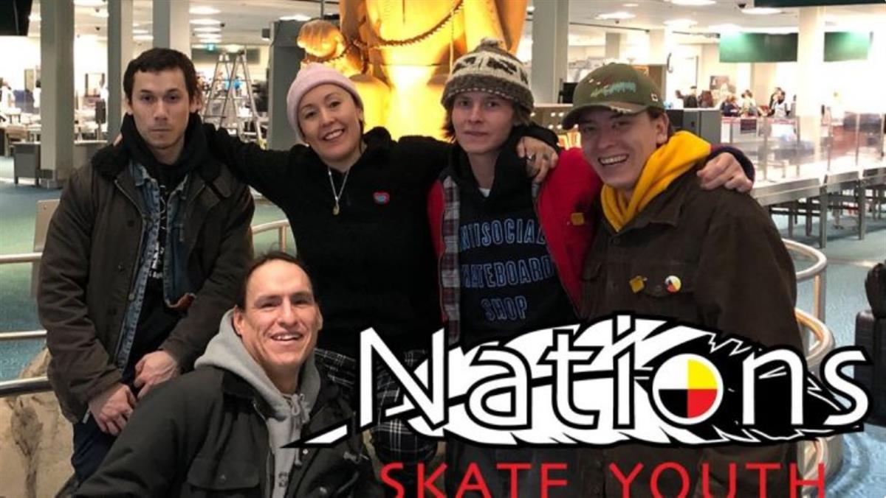

Nations Youth Society was founded in early 2020, we’re are in the process of taking over the respected, “CANADIAN SOCIETY FOR KIDS ACHIEVING THROUGH EDUCATION AND CULTURE (CSKATEC)” they are incorporated as a non-profit organization under the Canada Not-for-Profit
Corporations Act. Since 2011.
NATIONS is an Indigenous-led organization that inspires youth and encourages the importance of keeping Indigenous culture and traditions alive. NATIONS provides skateboarding lessons and promotes the constructions of more skateparks in First Nations communities. NATIONS is excited about building healthier communities.
Mission statement: Empowering Indigenous youth to embrace their right to self-determination through the positive impact of skateboarding.
We will be using the funds raised to help with our upcoming trip to 3 Indigenous communities in July to Alberta, including car rental, gas, per diem for instructors, lodging, and safety equipment for participants. Any expenses related to these 3 trips will be transparently accounted for. We appreciate you making these trips and future events possible with your generous gifts!
*Please note* you will not be receiving a donation receipt at this time as we are not a Registered Canadian not for profit that can do this, however we are currently in the process of getting that status.
We appreciate that you want to be a part of something special.
Thank you on behalf of Nations volunteers
Joe Buffalo
Rose Archie
Tristin Henry
Dustin Henry
Adam George

SOURCE: NATIONS SKATE YOUTH
SOURCE: INDEGINOUS SKATEBOARDING PROGRAM
OTEHR LINKS: BRITISH FILM INSTITUTE SKATE REFERENCES